發聲原理與聲音特性
第 8 章・建議學習 1 小時
本章重點
- 聲音從撥片離開琴弦那一刻就開始，同時受弦、琴橋、面板、琴體、音孔、內部空氣、演奏方式影響。
- 相同規格可以有不同聲音。因為木材、厚度、bracing、接觸與彈奏條件都會變。
- bridge admittance（琴橋導納）描述結構「多容易被推動」；它不等於音量。
- 「亮」「暖」是好用的溝通詞，但不是單一物理量。
- 聲學數據能描述差異，不會自動告訴你哪一把比較好。
「這把琴比較亮」「那把比較厚」「某種木頭比較有穿透力」，是樂器世界最常見的語言。
但這些形容詞很容易把一個複雜系統，說成單一原因。
曼陀林的聲音，從撥片離開琴弦那一刻開始，就同時受到這些東西影響：
- 琴弦
- 琴橋
- 面板
- 琴體
- 音孔
- 內部空氣
- 演奏方式
如果不先把這條物理鏈拆開，任何音色討論都很容易滑向印象和品牌神話。
三個要先分清楚的名詞
| 名詞 | 白話解釋 |
|---|---|
| 振動模態（mode） | 哪些部位在什麼頻率下一起振動？ |
| 琴橋導納（bridge admittance） | 施力之後，琴橋與面板如何回應？ |
| 聲音輻射（sound radiation） | 結構振動如何變成聽得見的聲音？ |
三組重要的研究
曼陀林聲學研究不像小提琴或吉他那麼龐大，但已有幾組重要成果：
| 年份 | 研究者 | 做了什麼 |
|---|---|---|
| 2003 | Cohen 與 Rossing | 用 electronic TV holography（電子電視全像術）研究四把 mandolin 與一把 mandola 的振動模態 |
| 2022 | Quintavalla 等人 | 對那不勒斯、米蘭、羅馬與現代義大利曼陀林，量測 bridge admittance、聲輻射與 soundboard wood 性質 |
| 2024 | 同一研究方向 | 把一把 1784 年 Joseph Filano 晚期巴洛克曼陀林，做博物館現場量測與有限元素分析 |
這些研究讓我們可以用實驗資料，而不只是耳朵傳說，來討論曼陀林。〔S704〕〔S705〕〔S706〕
本章的目標，是讓你掌握每種資料能回答什麼問題：
- 頻率響應能告訴我們什麼？
- bridge admittance 在量什麼？
- 為什麼模態不是單一共鳴點？
- 為什麼兩把外觀幾乎一樣的琴，仍可能有明顯差異？
8.1 琴弦的振動
理想弦的基頻（fundamental，最低的那個音），可以用一個簡單關係理解：
| 如果… | 音高會… |
|---|---|
| 弦越短 | 越高 |
| 張力越大 | 越高 |
| 單位長度質量越大 | 越低 |
D'Addario（知名弦廠）的張力技術資料，用 unit weight（單位重量）、scale length（弦長）、frequency（頻率）三個變數來計算張力。
本質上，這就是同一套弦振動關係的工程形式。〔S715〕〔S721〕
打個比方：弦就像跳繩。繩子越短，甩起來轉得越快；繩子拉得越緊，也轉得越快；繩子越粗，就越難甩快。
一個具體的算術例子
這個公式的實務意義非常直接。
假設：一根完全相同的弦，調到完全相同的音高，只把弦長從 33.5 cm 增加到 43.2 cm。
理論上，張力會按弦長的平方增加，大約變成原來的 1.66 倍。
當然，真實的 mandola 會換用不同的 gauge（弦徑）、不同的 winding（纏繞方式）和不同的音高。
所以不會真的把標準曼陀林的弦，直接拉到這種張力。
這個例子只是用來說明：弦長是張力系統的一部分。
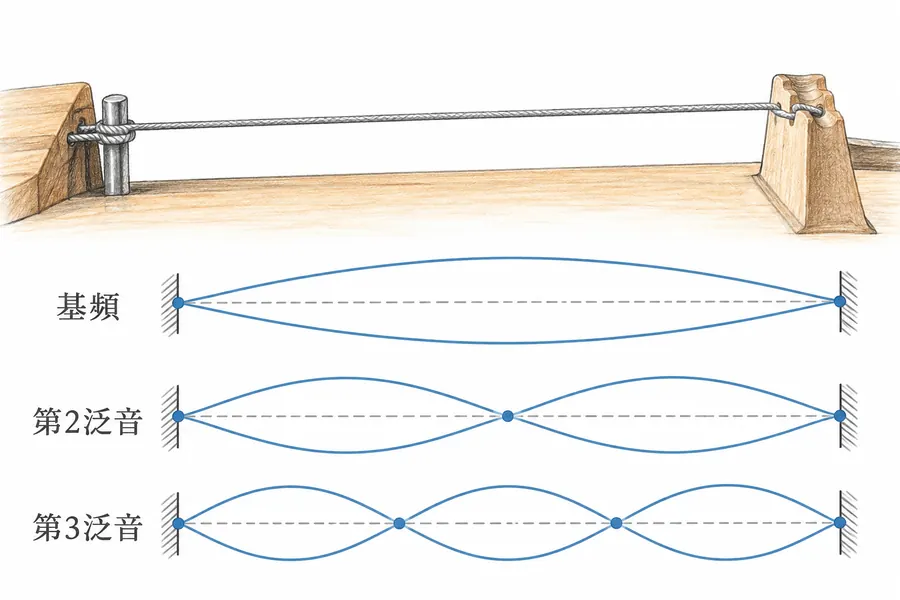
圖解 8.1 琴弦的振動（示意）
弦不是理想弦
琴弦不是理想的柔軟弦。
以下幾件事，都會讓實際的泛音偏離理想的整數倍：
- 金屬芯線
- winding（纏繞層）
- 端點剛性
- 按弦接觸
- 撥擊位置
這就是 string inharmonicity（弦的非諧性）的來源之一。
對短弦、高音、複弦樂器而言，這些細節會影響 attack 與調音感。
但不需要因此把每一根弦的物理都量到實驗室等級。理解趨勢，已足以解釋大部分的 Setup 現象。
8.2 起音與能量輸入
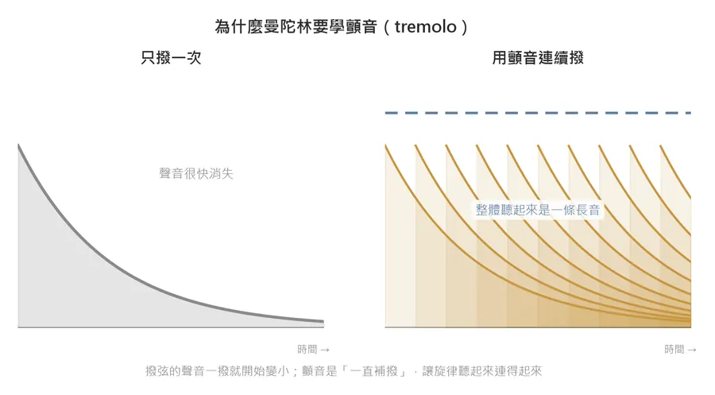
圖 H 為什麼要學顫音：撥弦的聲音一撥就變小，顫音是「一直補撥」。
弓弦樂器能在一個長音裡，持續由弓輸入能量。
曼陀林則不同：撥片把琴弦拉開後迅速釋放。
能量輸入發生在很短的時間內。所以聲音具有清楚的 attack，之後就進入 decay（衰減）。
這種發聲機制，是曼陀林「顆粒感」的基礎。
它也是 tremolo（顫音）會成為歷史核心技法的物理原因：
演奏者用連續快速的撥擊，把一串衰減中的短音，組織成聽覺上的持續線條。
打個比方：這就像用一張張靜止畫面，拼成動畫。單張畫面會消失，但快速播放起來，看起來就是連續的動作。
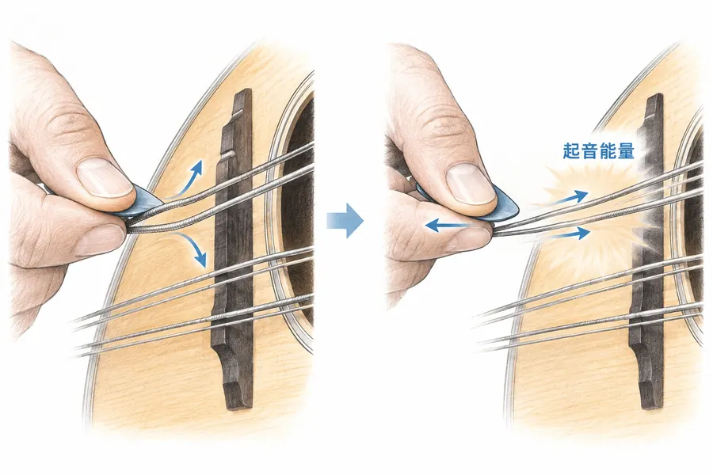
圖解 8.2 起音與能量輸入（示意）
attack 不只是「撥片聲」
真正的 attack，不只是「撥片碰到弦」那個聲音。
以下因素都會改變琴弦初始的位移形狀與高頻成分：
- 撥片材質
- 撥片厚度
- 撥片尖端
- 撥片角度
- 撥擊位置
| 撥奏位置 | 常見效果 |
|---|---|
| 靠近琴橋 | 高頻比例通常增加 |
| 靠近指板 | 相對柔和 |
但實際效果仍受琴體響應影響。
第 13、14 章會從「手」的角度討論。這裡先把它視為一個輸入訊號：
同一把琴，只要輸入方式不同，頻譜就已經不同。
所以比較兩把琴很困難
拿兩把琴比較時，如果撥片、位置、力度、錄音距離都沒有控制，所謂的「頻譜比較」，很容易其實是在比較演奏者。
正式聲學研究之所以用 impact hammer（衝擊錘）或可重複的激勵方式，就是為了盡量把人為變數抽掉。〔S705〕
8.3 同音複弦與拍頻
同一 course 的兩根弦，目標是調成同音。
但它們不會在所有瞬間完全同步。
可能出現微小差異的原因：
- 弦的直徑
- 弦的老化
- 按弦壓力
- 撥片先碰到哪一根
- 弦橋端點條件
兩個非常接近的頻率，會產生拍頻（beating）。
| 兩弦差距 | 聽起來 |
|---|---|
| 很小 | 像聲音在輕微呼吸 |
| 太大 | 明顯像走音 |
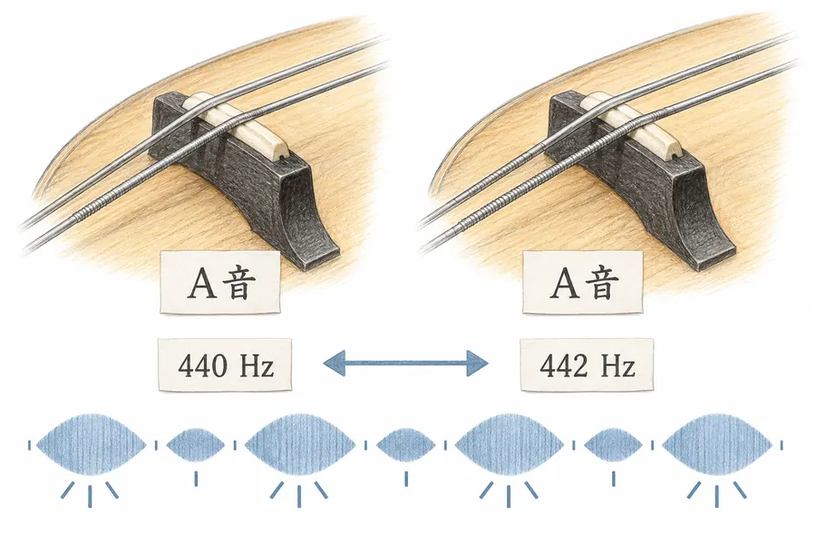
圖解 8.3 同音複弦與拍頻（示意）
不要故意留下大拍頻
專業調音時，不應該故意留下大拍頻來「製造 chorus（合唱效果）」。
曼陀林自然的複弦活性，已經來自兩根弦的非完全同步與不同瞬態。
如果基本音高差太大，和弦與 tremolo 反而會失去清晰度。
這對錄音尤其明顯：近距離麥克風，比現場耳朵更容易放大兩根弦的差異。
【常見誤解】
誤解：「同一組的兩條弦故意調得差一點點，聲音會更豐富。」
事實：曼陀林的複弦活性來自自然的非完全同步。刻意留下大拍頻，會讓和弦與 tremolo 失去清晰度。錄音時尤其明顯。
撥片讓激勵變得更複雜
複弦也讓右手的激勵變得更複雜。
撥片通常先接觸一根、再穿過第二根。
撥片越厚、入弦越深，兩次接觸的時間差可能越清楚。
這也是為什麼「同一把琴換撥片就像換聲音」並不只是心理作用。
但效果大小，仍然必須和整體琴體響應一起看。
8.4 琴橋導納與結構響應
Bridge admittance（琴橋導納）可以先用直覺理解：
在琴橋施加一定大小的力，琴橋會產生多少速度或位移響應。
| admittance | 意思是 |
|---|---|
| 高 | 琴橋—面板系統在那個頻率比較容易被驅動 |
| 低 | 相對不容易被驅動 |
它描述的是結構接受能量的方式。
音量還要一起觀察聲音輻射的效率。
打個比方：admittance 像「門好不好推」。門很好推，不代表門後面的房間就一定很熱鬧。
2022 年研究怎麼做
2022 年義大利曼陀林研究，使用 impact hammer（衝擊錘）激勵琴橋，量測 bridge admittance 與聲壓，並比較三把歷史義大利琴與現代研究琴。
這種方法的優點，是能把兩件事分開觀察：
- 「結構有沒有動」
- 「動了之後輻射多少聲音」
兩者相關，但不是完全一樣。
結構動得多，不代表所有能量都有效轉成遠場聲音。〔S705〕
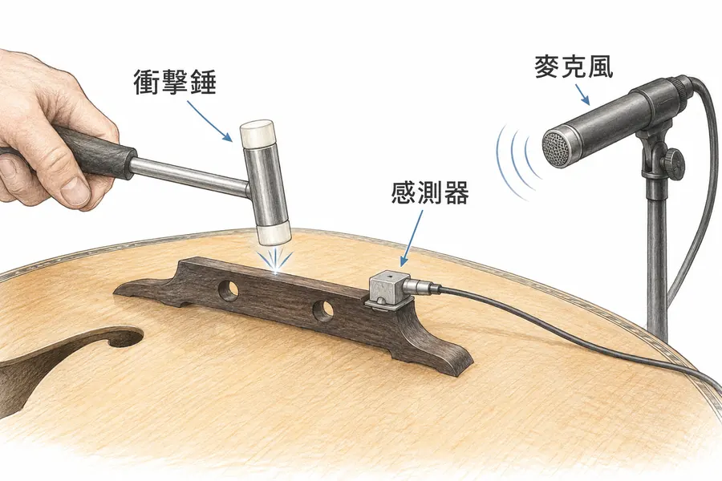
圖解 8.4 琴橋導納與結構響應（示意）
實務上的意義
琴橋質量、腳底接觸、面板剛性與 bracing，都可能改變 admittance。
這也是為什麼任意把琴橋削薄、挖空或換超輕材料，需要同時評估兩件事：
- 頻率響應
- 結構安全
某些頻率可能變敏感，其他頻率也可能改變。
結構安全與音準調整餘量，還會一起受影響。
8.5 琴體的振動模態
真正的面板，在不同頻率會形成不同的振動形狀，稱為 modes（模態）。
- 某些區域同方向動。
- 某些區域反方向動。
- 中間可能出現位移很小的 nodal lines（節線）。
隨頻率升高，模態通常變得更複雜。
所以「這塊面板的共鳴頻率」如果只指單一數字，往往過度簡化。
打個比方：模態就像一塊布被抖動時，會出現好幾種不同的皺褶圖案。頻率不同，圖案就不同。
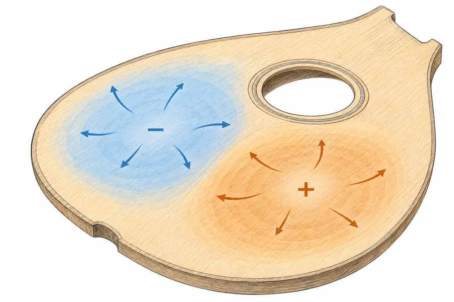
圖解 8.5 琴體的振動模態（示意）
Cohen 與 Rossing 的發現
Cohen 與 Rossing 以 TV holography（電視全像術）觀察四把曼陀林與一把 mandola。
他們發現：
- 最低階的 (0,0) 類模態，可能呈現 doublet（雙峰）或 triplet（三峰）。
- modal frequencies 和 frequency response curves 有明顯關聯。
他們也指出：聲輻射在 0–5 kHz 相當廣泛，大約 2.5 kHz 以上開始有 rolloff（高頻衰減）。
這不等於每把曼陀林都會有同一組數字。而是證明：琴體響應可以由多個結構模態共同形成。〔S704〕
這個知識有什麼用
| 你是誰 | 模態分析的價值 |
|---|---|
| 製琴師 | 理解厚度、拱度、bracing 與材料剛性改變後，整體模態如何移動 |
| 演奏者 | 知道「某音特別大」不一定是琴弦的問題 |
對演奏者而言，知道這一點就夠了：它可以避免把「某個音特別大」，簡單歸咎於琴弦。
那可能是琴弦、琴體，或兩者耦合的結果。
8.6 琴腔空氣的共鳴
琴腔裡的空氣也參與振動。
當面板和背部振動，腔內容積的變化會推動空氣。
音孔則讓內外空氣交換，並形成低頻共鳴。
常被引用的 Helmholtz resonance（亥姆霍茲共振），是理解這類現象的第一步。
但真實樂器的面板與背部不是剛性容器，所以空氣模態會和木板模態耦合。
打個比方：Helmholtz 共振就像對著空瓶口吹氣會發出低音。但真實的琴不是玻璃瓶，它的「瓶身」會跟著一起震動。
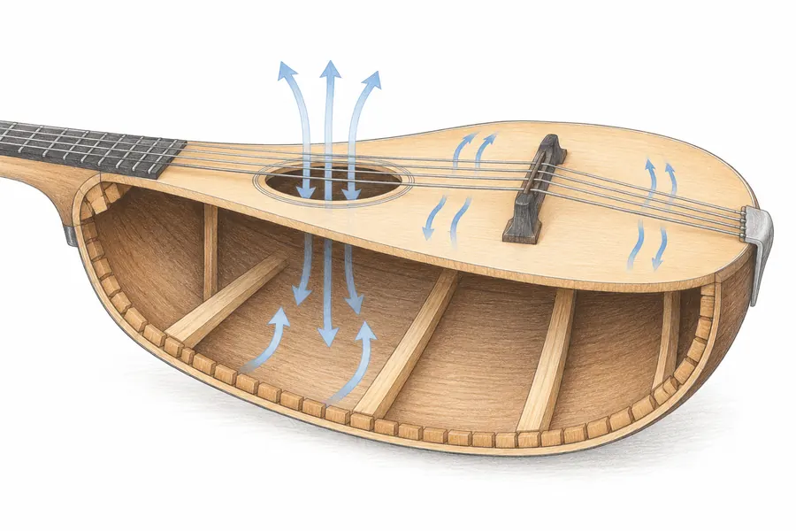
圖解 8.6 琴腔空氣的共鳴（示意）
為什麼不能只看音孔形狀
改變音孔面積、位置或琴體容積，都可能移動某些空氣相關共鳴。
但結果同時受到面板與背部剛性影響。
這就是為什麼單看 f-hole 或 round hole，很難可靠預測「聲音比較亮還是暖」。
外形只是聲學條件的一部分。
麥克風位置會改變你聽到的「琴聲」
2022 年研究把琴腔內外麥克風都納入量測，以區分 air cavity response（空氣腔響應）與外部輻射。
這種設計提醒我們：麥克風放在哪裡，看到的「琴聲」其實不同。
錄音時如果麥克風正對音孔，很容易放大特定腔體頻率。
那不一定等於觀眾在一公尺外聽到的整體聲音。〔S705〕
8.7 頻譜與聲音輻射
頻譜（spectrum） 把聲音分解成不同頻率成分，可以看出：
- 基頻（fundamental）
- 泛音（overtones）
- 某些共鳴峰
但同一張頻譜若忽略時間，就會遺失 attack 與 decay。
曼陀林的辨識感，很大一部分來自短促的瞬態。
所以只看長時間平均頻譜，可能把最重要的撥片資訊沖淡。
「亮」和「暖」到底是什麼
| 用詞 | 通常和什麼有關 | 但不是 |
|---|---|---|
| 亮（bright） | 較多高頻能量、清楚起音 | 不是固定門檻 |
| 暖（warm） | 較平滑的高頻、較強中低頻，或較柔和的 attack | 不是固定門檻 |
這些詞在音樂溝通中很好用。
只要不要把它們假裝成單一物理量。
本書會把聽感詞當作結果描述，不把它們直接等同木材或音孔。
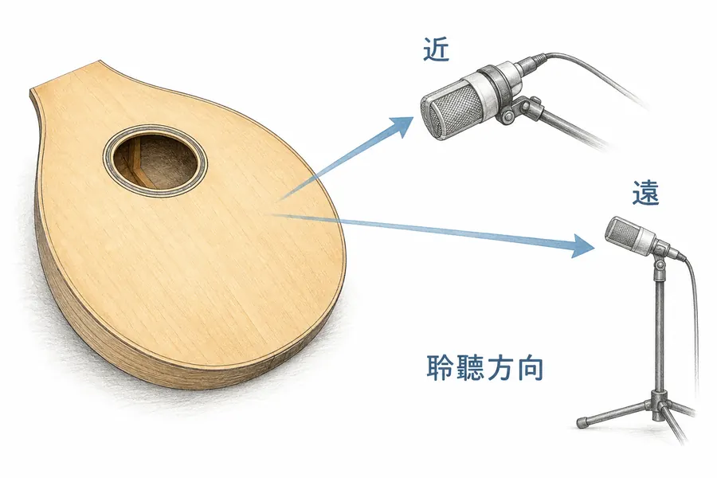
圖解 8.7 頻譜與聲音輻射（示意）
聲音有方向性
聲輻射還有方向性。
高頻波長較短，樂器不同區域可能出現相位差。
結果是：觀眾站在不同方向，聽到的頻率平衡會不一樣。
舞台擴音與錄音時，麥克風位置因此是在選擇你要的整體比例。
【常見誤解】
誤解：「這把琴的聲音就是這樣，走到哪裡聽都一樣。」
事實：聲輻射有方向性。高頻波長短，不同區域可能出現相位差，站在不同方向聽到的頻率平衡會不同。這也是麥克風位置重要的原因。
8.8 木材與整琴響應
聲學研究確實證明：soundboard wood 的密度與彈性性質，會影響板的模態與頻率響應。
2022 年研究直接量測 Norway spruce（挪威雲杉）樣本的機械性質，再用有限元素模型連結到 soundboard 行為。
這支持「木材物理性質重要」。
但不支持「只知道樹種名稱，就能預測整把琴」。〔S705〕
同一樹種內部也有差異
| 變數 | 說明 |
|---|---|
| 密度 | 同一種木頭，密度也會不同 |
| 年輪 | 生長速度不同 |
| 早晚材比例 | 春夏材與秋冬材的比例 |
| 方向性 | 木紋方向 |
做成面板後，又受到厚度分布、拱度與 bracing 影響。
換句話說，樹種只是其中一層資訊。
真正有意義的參數，是這塊特定的木料、這個特定的幾何，和這把特定的整琴的組合。
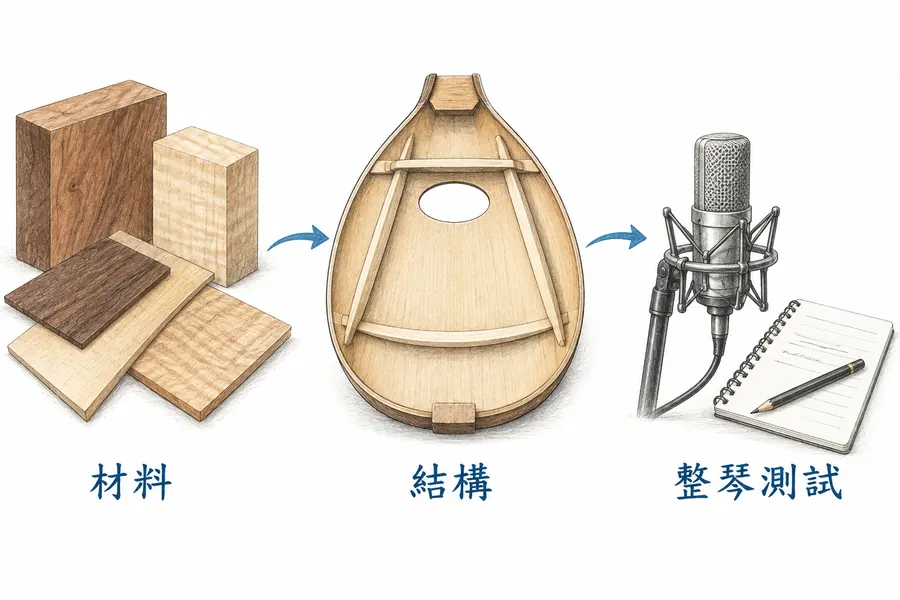
圖解 8.8 木材與整琴響應（示意）
【常見誤解】
誤解：「這是雲杉面板，所以聲音一定很亮。」
事實：同樹種內部也有密度、年輪、早晚材與方向性差異。做成面板後又受厚度、拱度與 bracing 影響。樹種只是其中一層資訊。
因此下一章談木材時，會把「材料性質」與「傳統音色描述」分成兩條線。
| 路線 | 性質 |
|---|---|
| 材料性質 | 可量測 |
| 傳統音色描述 | 有價值，但屬經驗語言 |
兩者不能互相冒充。
8.9 1784 年 Filano 琴的研究
2024 年研究選擇了一把 1784 年 Joseph Filano 的那不勒斯曼陀林。
研究在博物館內，以可攜式設備做四項調查：
- sound spectrum（聲音頻譜）
- admittance（導納）
- mobility（移動性）
- mode shape survey（模態形狀調查）
再以有限元素分析（finite element analysis）輔助。
目的之一，是為歷史複製琴提供更完整的聲學基準。
這把琴還處於 gut–metal 混合弦的轉換期，是理解晚期巴洛克曼陀林的重要案例。〔S706〕
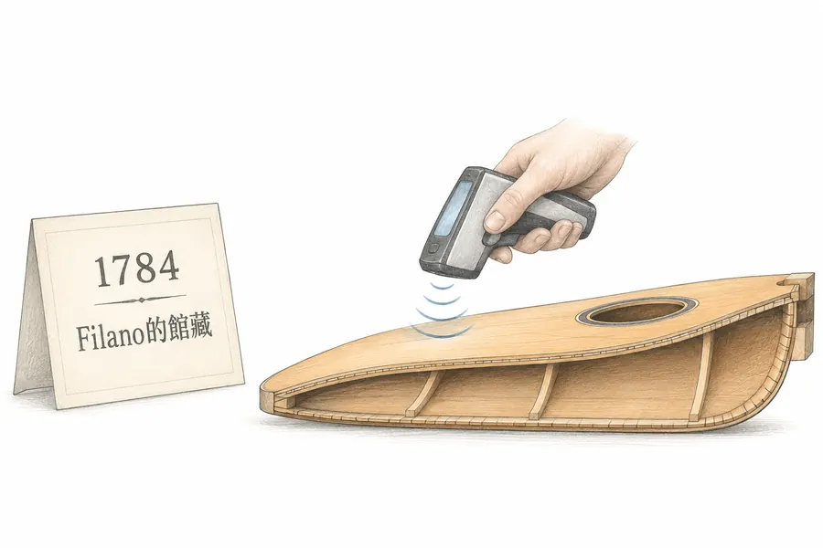
圖解 8.9 1784 年 Filano 琴的研究（示意）
對「復刻」的重要提醒
研究者特別指出：即使複製琴使用同樹種、同尺寸、相似工法，木材本身的機械性質差異仍可能造成聲學差異。
這件事對所有「復刻」概念都很重要：
外觀一樣、木種一樣，不等於動態響應一樣。
真正嚴謹的歷史複製，需要把原琴的材料與聲學一起記錄。
反過來給收藏者的提醒
這也提醒收藏者：兩把同型號的量產琴有差異，並不一定意味其中一把「做壞了」。
原因包括：
- 木材是天然材料
- 膠合
- 厚度
- 橋接觸
- aging（老化）
這些都有製造公差。
型號只能描述設計範圍，不可能把每一把個體壓成同一種聲音。
【常見誤解】
誤解：「同型號的兩把琴聲音不一樣，其中一把一定有問題。」
事實：木材是天然材料，膠合、厚度、橋接觸與老化都有製造公差。型號只描述設計範圍，不是統一聲音的保證。
8.10 案例 相近規格的聲音差異
假設兩把琴都有 spruce top、maple back、相同弦長、相同弦組與類似重量，聲音仍然可能差很多。
可以依序檢查這些問題：
| # | 要檢查什麼 |
|---|---|
| 1 | 面板厚度和拱度是否相同？ |
| 2 | bracing 的尺寸和位置是否一致？ |
| 3 | 琴橋質量與腳底接觸如何？ |
| 4 | 兩塊 spruce 的密度和剛性是否接近？ |
| 5 | 琴弦新舊與撥片條件是否一致？ |
任何一個環節，都可能讓模態和瞬態改變。
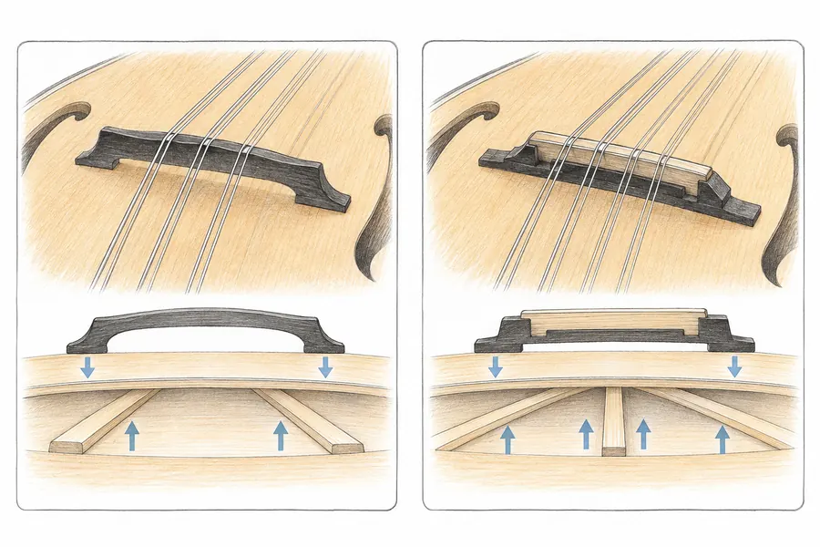
圖解 8.10 案例 相近規格的聲音差異（示意）
怎麼做公平的比較
如果要做相對公平的比較，應該先統一這五件事：
- 弦
- 調弦
- 撥片
- 演奏位置
- 錄音幾何
然後再比較四件事：
- attack
- sustain
- 頻率平衡
- 動態反應
比較時，使用多次重複錄音，確認差異能不能穩定重現。
若要進一步量測，可以用固定激勵或 re-amping（把錄好的訊號重新送進系統）類的概念，降低人為變數。
最重要的一條界線
最後仍要保留一個重要界線：
聲學數據可以描述差異，不會自動告訴你「哪一把比較好」。
| 某把琴的特性 | 可能的好處 | 可能的壞處 |
|---|---|---|
| 高頻多 | 在樂團裡更清楚 | 獨奏近距離可能覺得太硬 |
| decay 長 | 適合歌唱性旋律 | 快速節奏可能變糊 |
品質判斷，必須把音樂用途放回來。
表 8-1｜常見聲學量測在回答什麼問題
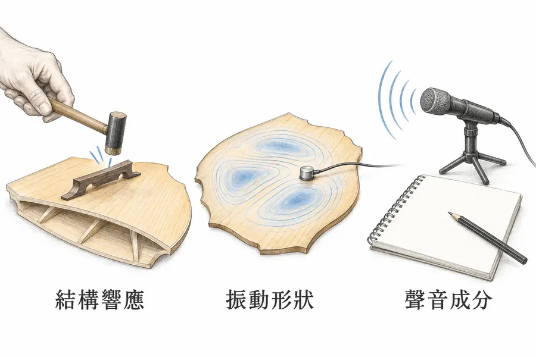
| 量測 | 它告訴我們 | 它不能直接告訴我們 |
|---|---|---|
| Frequency response（頻率響應） | 不同頻率輸入下的響應強弱 | 「好不好聽」的唯一答案 |
| Bridge admittance（琴橋導納） | 琴橋受力後結構有多容易動 | 遠場聲音全部大小 |
| Modal analysis（模態分析） | 不同頻率的振動形狀 | 哪個木種「最好」 |
| Spectrum（頻譜） | 聲音含有哪些頻率成分 | 完整 attack／decay 與音樂表情 |
圖解 表 8-1｜常見聲學量測在回答什麼問題（示意）
【公式不是答案】
弦的基頻關係可以寫成 f = (1/2L)√(T/μ)。
它能解釋弦長、張力與線密度的趨勢，但真實的弦還有剛性、winding、端點與按弦拉伸。
所以 Setup 不能只靠公式。
其中 L 是弦長、T 是張力、μ 是線密度。【查證筆記】
Cohen & Rossing 的研究主要是美式 mandolin／mandola 的模態。
Quintavalla 團隊則補上義大利 bowlback 與歷史琴。
兩類研究對象不同，不應把其中一組數據，直接當成所有曼陀林的「標準頻率」。
自我學習題庫
學習檢查：作答、核對、複習
先自己作答，再看答案。答錯時回到本章相關小節重新讀一次。
1. Bridge admittance 可以簡單理解成？
- A. 琴橋對外力的響應程度
- B. 琴橋價格
- C. 木材含水率
- D. 弦鈕齒比
2. Tremolo 和聲學上的哪個特性關係密切？
- A. 撥弦音會逐漸衰減
- B. 琴盒大小
- C. 指板顏色
- D. 品牌歷史
3. 曼陀林的共鳴來自？
- A. 只有面板
- B. 琴體、空氣與多個結構共同作用
- C. 只有弦
- D. 只有音孔
答案：1.A 2.A 3.B
本章主要查證來源

查證來源：找原文、核條件、留紀錄
【S704】David Cohen & Thomas D. Rossing：The acoustics of mandolins（Acoustical Science and Technology 24(1), 2003）。 四把曼陀林與一把 mandola 的 normal modes、頻率響應與 TV holography 研究。
https://www.jstage.jst.go.jp/article/ast/24/1/24_1_1/_article/-char/en
【S705】Quintavalla et al.：The Acoustics of Traditional Italian Mandolins and Their Relation with Soundboard Wood Properties（International Journal of Wood Culture 2, 2022）。 義大利歷史與現代曼陀林的 bridge admittance、聲輻射、模態與 soundboard wood 研究。
https://www.sciencedirect.com/org/science/article/pii/S2772318622000017
【S706】Quintavalla et al.：Acoustical Survey and Finite Element Analyses of Late Baroque Mandolin（International Journal of Wood Culture 4(1), 2024）。 1784 Joseph Filano 曼陀林的聲學量測、有限元素分析與複製研究。
https://www.sciencedirect.com/org/science/article/pii/S2772318624000018
【S715】D'Addario：A Complete Technical Reference for Fretted Instrument String Tensions（technical guide）。 弦張力與 unit weight、scale length、frequency 的關係與公式。
https://www.daddario.com/globalassets/pdfs/accessories/tension_chart_13934.pdf
【S721】D'Addario：What Is Guitar String Tension?（current resource）。 unit weight、scale length、frequency 三變數對張力的說明。
https://www.daddario.com/blogs/guitar/all-about-string-tension